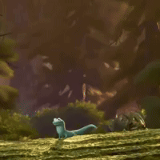

Laboratorios
Prácticas de HTML y actividades de aprendizaje. Comienza por el Laboratorio 01, dedicado al cine de Quentin Tarantino.

Proyecto IoT
Bienvenido a mi sitio personal. Aquí organizo de momento todo lo de IoT :B
MI TRABAJO
Prácticas de HTML y actividades de aprendizaje. Comienza por el Laboratorio 01, dedicado al cine de Quentin Tarantino.
Un apartado preparado para mis entregables y proyectos del curso. Se actualizará conforme avance el semestre.